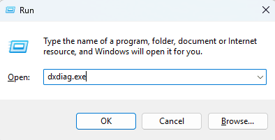

Finding your WDDM version
Introduction
WDDM stands for Windows Display Driver Model, the latest version of the Windows operating system, Windows 11 requires WDDM 2.0, therefore it is important that you know the display driver model version that your computer is operating under.
It is really easy to find your Windows Display Driver Model version, you will need to use a tool called DirectX Diagnostic Tool (dxdiag.exe), this tool is free to use and is built into your computer.
How do I use DirectX Diagnostic Tool to find my WDDM version?
It is really easy to find your WDDM version using the dxdiag tool, to launch dxdiag you need to open run by holding both the Windows key "🪟" and "R" key on your keyboard at the same time.
Once you have opened the run dialog, you need to enter "dxdiag.exe" and press the "OK" button, this will launch the DirectX Diagnostic Tool.

You should now see the DirectX Diagnostic Tool; you need to click on the tab that says "Display 1".

On the right of the dxdiag tool you should see a section called "Drivers", in this section you should see your Driver Model, in the example above the Driver Model is "WDDM 3.1", the value you see in this section is your WDDM version.
Your WDDM version must be 2.0 or higher if you wish to run Windows 11, you might be able to update to a newer driver model by updating your display drivers or by upgrading your GPU if you are using a desktop.
If you are using a laptop, you cannot replace your GPU and you will need to replace your entire machine if WDDM 2.0 drivers are not available for your hardware if you wish to upgrade to Windows 11.
You can install the latest display drivers for your hardware from your GPU manufacturer, the most common GPU manufacturers for computers are Intel, AMD, and NVIDIA, you can download the latest display drivers for your computer via the links below.
For Intel based graphics:
Intel Download CentreFor AMD based graphics:
AMD Drivers and SupportFor NVIDIA GeForce® based graphics:
NVIDIA GeForce® DriversPage Updated: 28/06/2024
Page Author: Hackboto